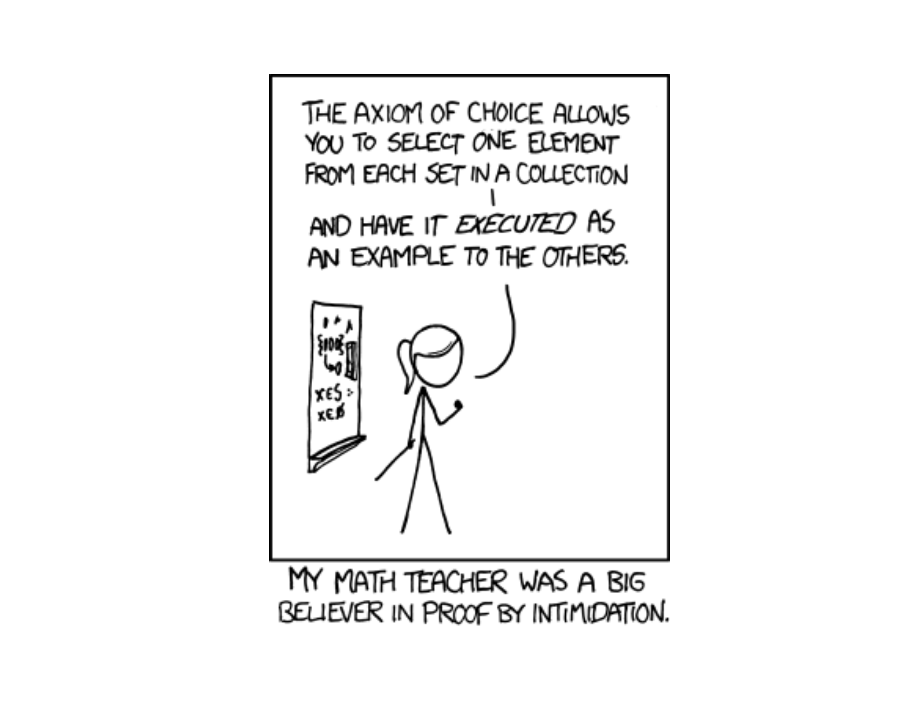
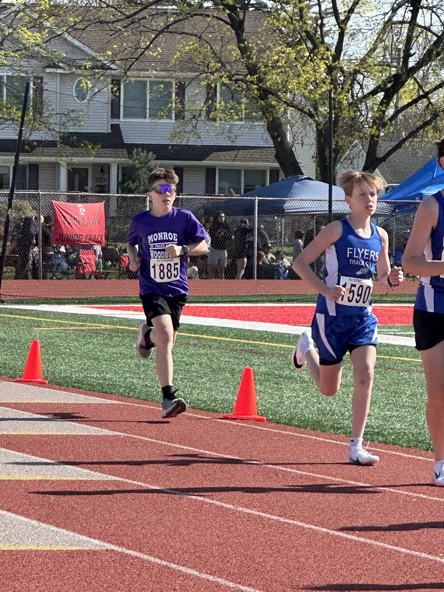
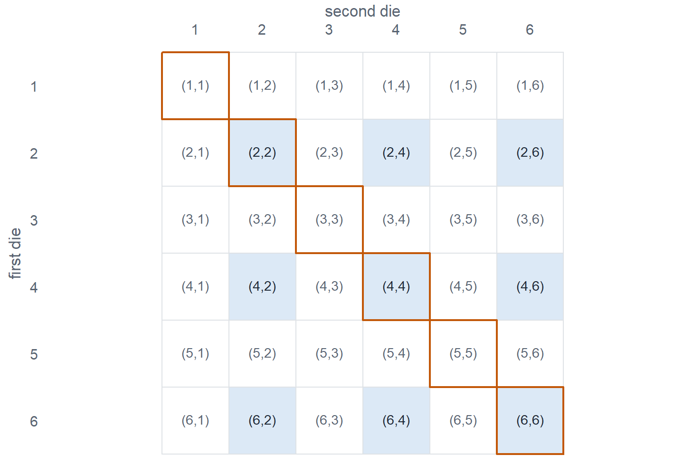
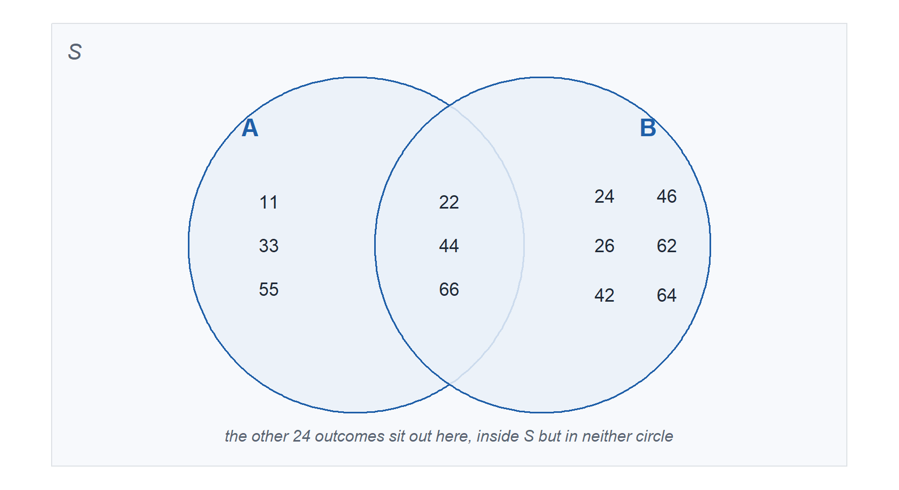
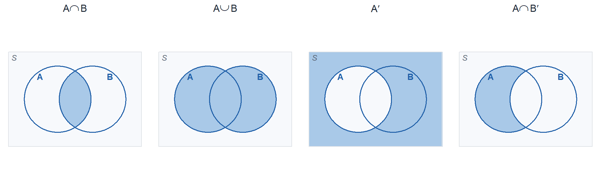
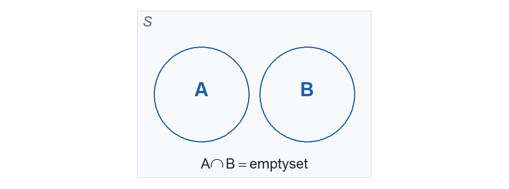
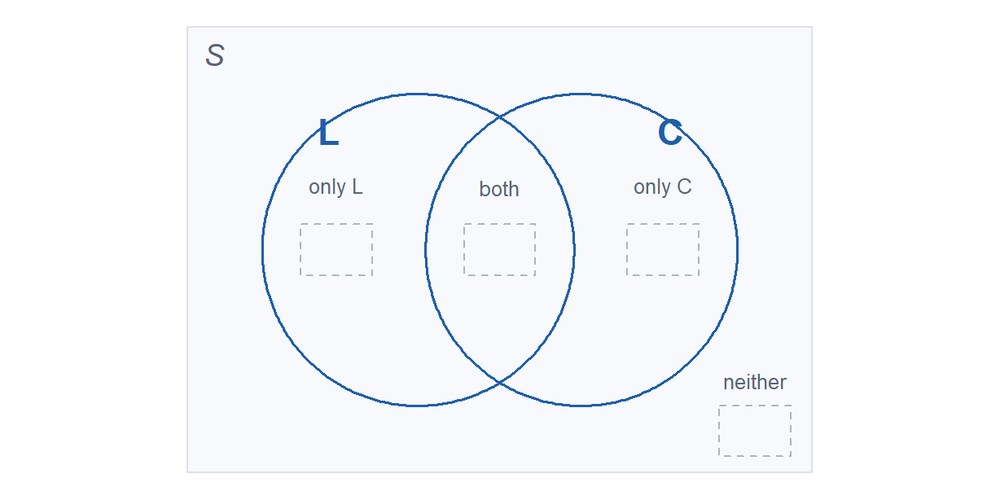
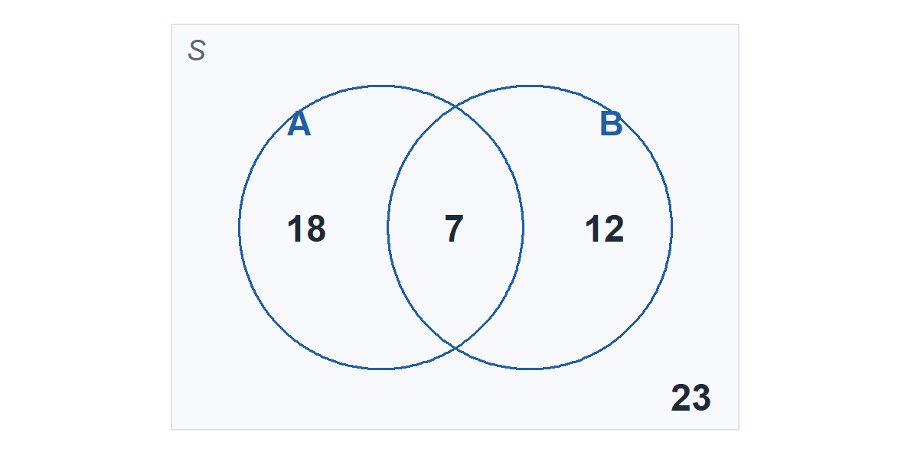

Lesson 3: Set Theory
Calendar

What We Did: Lessons 1 and 2
NoteReview: Data and Study Design (Lesson 1)
- Population is everything we want to learn about. Sample is what we actually observe.
- A parameter describes a population (\(\mu\), \(\sigma\), \(p\)). A statistic describes a sample (\(\bar{x}\), \(s\), \(\hat{p}\)).
- Random sampling buys you generalization. Random assignment buys you causation. They are two different things.
- Data are categorical or numerical, and numerical data are discrete or continuous.
NoteReview: Location and Variability (Lesson 2)
- Center: the mean \(\bar{x}\) is pulled by outliers, the median is not, the trimmed mean sits in between.
- Spread: the sample variance \(s^2 = \frac{\sum (x_i - \bar{x})^2}{n-1}\), and \(s = \sqrt{s^2}\) in the original units.
- The fourth spread \(f_s\) is resistant, and a value is an outlier when it sits more than \(1.5 f_s\) beyond the nearest fourth.
- A boxplot shows center, spread, skew, and outliers in one picture.
Everything so far has described data we already have. Starting today we build the machinery for data we have not seen yet, and that machinery is probability. Before we can put a number on how likely something is, we need a precise way to say what “something” even is. That is set theory.
What We’re Doing: Lesson 3
Objectives
- Define an experiment, its sample space, and events. (SLO 7)
- Form unions, intersections, and complements of events using set operations and Venn diagrams. (SLO 7)
- Represent compound events for a given experiment. (SLO 7)
Required Reading
Devore 2.1
Open Vantage
Go to MA206 workspace in Vantage. Bookmark it. That is where the project data lives.
Break!
Reese
Cal

The Takeaway for Today
NoteKey Concepts from Lesson 3
- An experiment is any activity whose outcome is uncertain before you run it.
- The sample space \(\mathcal{S}\) is the set of every possible outcome, listed once each.
- An event is any subset of \(\mathcal{S}\). It is simple if it holds one outcome, compound if it holds more than one.
- Three operations build every event you will ever need: union \(A \cup B\), intersection \(A \cap B\), and complement \(A'\).
- Two events are mutually exclusive (disjoint) when \(A \cap B = \emptyset\), meaning they cannot both happen.
Introduction to Probability
Why We Are Doing This
What We Have Built So Far
Two lessons in, we can already handle a data set from end to end:
- Collect it. Population vs sample, random sampling vs random assignment, and what each one entitles you to claim.
- Classify it. Categorical, numerical discrete, numerical continuous, which decides how you summarize it and which method you will use later.
- Picture it. Histograms and boxplots, shape, skew, outliers.
- Summarize it. Mean, median, trimmed mean, standard deviation, fourth spread.
Every one of those describes data we already have in hand.
Now we shift to probability, which lets us:
- Model random phenomena
- Quantify uncertainty
- Make claims about observations we have not seen yet
Before we can put a number on how likely something is, we need a precise way to say what “something” even is. That is today.
Sample Spaces and Events
Experiments and Sample Spaces
ImportantDefinition
An experiment is any activity or process whose outcome is subject to uncertainty.
The sample space of an experiment, denoted \(\mathcal{S}\), is the set of all possible outcomes of that experiment.
Seven experiments, each with its sample space.
Experiment 1: Flip a coin once and record the face.
Sample space: \(\mathcal{S} = \{H, T\}\)
Experiment 2: Roll a die once and record the number.
Sample space: \(\mathcal{S} = \{1, 2, 3, 4, 5, 6\}\)
Experiment 3: Flip a coin 10 times and count the heads.
Sample space: \(\mathcal{S} = \{0, 1, 2, \ldots, 10\}\)
Experiment 4: Fire at a target until the first hit and count the rounds fired.
Sample space: \(\mathcal{S} = \{1, 2, 3, \ldots\}\)
Experiment 5: Count the maintenance calls the motor pool receives in one hour.
Sample space: \(\mathcal{S} = \{0, 1, 2, \ldots\}\)
Experiment 6: Measure the time until the next maintenance call comes in.
Sample space: \(\mathcal{S} = \{t : t > 0\}\)
Experiment 7: Measure the height of a randomly selected cadet.
Sample space: \(\mathcal{S} = \{h : h > 0\}\)
Events
Stay on experiment 2. One die, \(\mathcal{S} = \{1, 2, 3, 4, 5, 6\}\), the same six dots you just drew. An event is nothing more than a decision about which of those dots count.
ImportantDefinition
An event is any collection (subset) of outcomes contained in the sample space \(\mathcal{S}\).
Ringed dots are in the event. Hollow dots are outcomes the die can still produce, they just do not make this particular event happen.
\(A\) = “roll an even number”, compound, three of the six outcomes.
\(A = \{2, 4, 6\}\)
\(B\) = “roll a number greater than 4”, compound, two of the six.
\(B = \{5, 6\}\)
\(C\) = “roll a 3”, simple, exactly one outcome.
\(C = \{3\}\)
\(D\) = “roll a 7”, the impossible event, nothing on the line makes it happen.
\(D = \{\ \} = \emptyset\)
\(E\) = “roll a number from 1 to 6”, the certain event, the whole line.
\(E = \mathcal{S}\)
Let’s Work an Example: Two Events on Two Dice
Experiment: roll a die, record it, then roll a second die and record it. Order matters, so \((2,4)\) and \((4,2)\) are different outcomes.
- \(A\) = “the two dice match”, a double
- \(B\) = “both dice are even”
- Define the sample space \(\mathcal{S}\). How many outcomes does it have?
- Enumerate \(A\) and \(B\). Write out the outcomes that make each one happen.
- Draw a Venn diagram and place the outcomes of \(A\) and \(B\) in the right regions.
TipAnswers
1. The sample space. Six choices on the first roll and six on the second, so \(\mathcal{S}\) has \(6 \times 6 = 36\) outcomes. Rows are the first die, columns are the second.
2. The two events. A definition is a sentence. An event is a set. Turn each sentence into the list of outcomes that make it happen.
- \(A = \{(1,1), (2,2), (3,3), (4,4), (5,5), (6,6)\}\), 6 outcomes, outlined below
- \(B = \{(2,2), (2,4), (2,6), (4,2), (4,4), (4,6), (6,2), (6,4), (6,6)\}\), 9 outcomes, shaded below

3. The Venn diagram. In the diagram \(24\) is short for \((2,4)\), a 2 on the first die and a 4 on the second.

Set Operations on Events
Events are sets, so we can combine them.
| Operation | Notation | Meaning |
|---|---|---|
| Union | \(A \cup B\) | “A or B, or both” |
| Intersection | \(A \cap B\) | “A and B” |
| Complement | \(A'\), also written \(A^{c}\) or \(\bar{A}\) | “not A” |

Back to the Two Dice
Same experiment as before. Roll a die, record it, then roll a second die and record it.
- \(\mathcal{S}\) has 36 outcomes
- \(A\) = “the two dice match” \(= \{(1,1), (2,2), (3,3), (4,4), (5,5), (6,6)\}\)
- \(B\) = “both dice are even” \(= \{(2,2), (2,4), (2,6), (4,2), (4,4), (4,6), (6,2), (6,4), (6,6)\}\)
Now that the operations have names, put them to work. For each one, say what it means in plain English, list the outcomes, and count them.
- \(A \cap B\)
- \(A \cup B\)
- \(A'\)
- \(A \cap B'\)
- \((A \cup B)'\)
TipAnswers
1. \(A \cap B\), a double and both even, so the even doubles.
\[A \cap B = \{(2,2), (4,4), (6,6)\}, \qquad 3 \text{ outcomes}\]
2. \(A \cup B\), a double or both even or both. Count the shared outcomes once, not twice: \(6 + 9 - 3 = 12\).
\[A \cup B = \{(1,1), (2,2), (2,4), (2,6), (3,3), (4,2), (4,4), (4,6), (5,5), (6,2), (6,4), (6,6)\}\]
3. \(A'\), not a double, so the two dice differ. Every outcome is either in \(A\) or in \(A'\), so \(36 - 6 = 30\) outcomes. Too many to be worth listing, which is itself the point: describe the event, count it, and only enumerate when the list is short.
4. \(A \cap B'\), a double but not both even, so the odd doubles.
\[A \cap B' = \{(1,1), (3,3), (5,5)\}, \qquad 3 \text{ outcomes}\]
That is the piece of \(A\) sitting outside \(B\) on the diagram.
5. \((A \cup B)'\), neither a double nor both even. From part 2 there are 12 outcomes in \(A \cup B\), so \(36 - 12 = 24\) outcomes are left. Those are the ones noted at the bottom of the Venn diagram earlier.
Mutually Exclusive Events
Two events \(A\) and \(B\) are mutually exclusive (or disjoint) if they cannot both occur:
\[A \cap B = \emptyset\]
where \(\emptyset\) is the null event, the event containing no outcomes at all.
Example (rolling a die):
- \(A\) = “roll an odd number” \(= \{1, 3, 5\}\)
- \(B\) = “roll an even number” \(= \{2, 4, 6\}\)
These are mutually exclusive. No roll is both odd and even.

De Morgan’s Laws
Two rules let you push a complement through a union or an intersection. They flip the operation on the way through.
ImportantDe Morgan’s Laws
\[(A \cup B)' = A' \cap B' \qquad\qquad (A \cap B)' = A' \cup B'\]
Practical Exercise: This Section Is the Sample Space
Two questions, hands up.
- Raise your hand if you are left handed. Call that event \(L\).
- Raise your hand if you are a corps squad athlete. Call that event \(C\).
Count carefully, because some of you are in both and some of you are in neither. Fill in the four regions before answering anything else.
| Corps squad (\(C\)) | Not corps squad (\(C'\)) | Row total | |
|---|---|---|---|
| Left handed (\(L\)) | |||
| Right handed (\(L'\)) | |||
| Column total | \(n =\) |

Part 1: Name the Pieces
What exactly is the experiment here? Say it in one sentence.
What is the sample space \(\mathcal{S}\), and how many outcomes does it have?
Write \(L\) and \(C\) as sets in words. Is either one a simple event?
How many outcomes are in \(L\)? In \(C\)? Where did those numbers come from in your table?
TipAnswers
Select one cadet at random from this section. That is the activity, and its outcome is uncertain until we draw. Note that raising hands is not the experiment, it is how we learn the composition of \(\mathcal{S}\).
\(\mathcal{S}\) is the set of every cadet in this section, one outcome per person, and it has \(n\) outcomes where \(n\) is our enrollment. Every cadet is exactly one outcome, listed once.
\(L\) = the set of left handed cadets in this section. \(C\) = the set of corps squad athletes in this section. Each is compound unless it happens to contain exactly one cadet, in which case it is simple. If nobody raised a hand, that event is \(\emptyset\).
\(n(L)\) is the row total for left handed, \(n(C)\) is the column total for corps squad. Both are sums of two of the four regions, which is the whole point of the table.
Part 2: Translate
Write each phrase in set notation, then give its count from your table.
Left handed and corps squad
Left handed or corps squad
Neither left handed nor corps squad
Left handed but not corps squad
Corps squad but not left handed
Exactly one of the two
Not left handed
TipAnswers
\(L \cap C\), the center region.
\(L \cup C\), all three shaded regions, which is everything except “neither”.
\((L \cup C)'\), the outside corner. By De Morgan this is also \(L' \cap C'\), and both are correct.
\(L \cap C'\), the left crescent.
\(L' \cap C\), the right crescent.
\((L \cap C') \cup (L' \cap C)\), the two crescents but not the middle. There is no single symbol for this in Devore, so you build it. Cadets who answer \(L \cup C\) here have included the people who are both, which the word “exactly” ruled out.
\(L'\), everything outside the \(L\) circle, which is the right handed cadets whether or not they are corps squad.
Part 3: Check the Laws With Real People
Count \((L \cup C)'\) directly off the diagram. Now count \(L' \cap C'\) region by region. Did De Morgan hold?
Count \((L \cap C)'\). Is it the same as \(L' \cup C'\)? Is it the same as your answer to part (a)?
Are \(L\) and \(C\) mutually exclusive in this section? What single number decides it?
Are \(L\) and \(L'\) mutually exclusive? Do they cover all of \(\mathcal{S}\)? What do we call a pair like that?
Add up the four regions. What must the total equal, and why is that a useful check?
TipAnswers
Yes, always. Both are the “neither” corner. This is not luck, it is De Morgan: \((L \cup C)' = L' \cap C'\).
\((L \cap C)'\) is everyone who is not both, which is three of the four regions: the two crescents plus the neither corner. It equals \(L' \cup C'\), again by De Morgan. It is not the same as part (a) unless nobody in the room is both, which is exactly the trap in Problem 4.
They are mutually exclusive only if \(n(L \cap C) = 0\), the center cell. One left handed corps squad athlete in the room and they are not disjoint. In most sections that cell is not zero.
Yes and yes: \(L \cap L' = \emptyset\) and \(L \cup L' = \mathcal{S}\). A pair like that is a partition of the sample space. Every cadet lands in exactly one of the two.
The four regions must sum to \(n\), the size of the section. If they do not, somebody double counted themselves, which is usually a cadet who is both and only raised a hand once.
Part 4: The Addition Rule, in Counts
Add up the left handed cadets and the corps squad athletes:
\[n(L) + n(C)\]
Now count \(n(L \cup C)\) straight off the diagram.
Are those two numbers equal? If not, which is bigger, and by exactly how much?
Write the rule that repairs the difference.
When do the two numbers agree?
Divide every count in your table by \(n\). What do those new numbers mean, and what does the rule from (b) become?
TipAnswers
\(n(L) + n(C)\) is bigger, and it is too big by exactly \(n(L \cap C)\), the center cell. Anyone in both circles got counted once as a lefty and once as an athlete.
The addition rule for counts: \[n(L \cup C) = n(L) + n(C) - n(L \cap C)\] Add the pieces, then subtract the overlap you counted twice.
Only when \(n(L \cap C) = 0\), that is, only when \(L\) and \(C\) are mutually exclusive. This is why “mutually exclusive” is worth a name: it is the case where you may simply add.
Dividing by \(n\) turns every count into a probability for a randomly selected cadet from this section, and the rule becomes \[P(L \cup C) = P(L) + P(C) - P(L \cap C)\] which is exactly Lesson 4. Nothing new happens next lesson, we just stop counting people and start using proportions.
Part 5: Push It (if there is time)
Add a third event: \(F\) = “is a cow”. Sketch the three circle Venn. How many regions are there now?
Guess the addition rule for three events, then check your guess against a region you can count.
Suppose a cadet claims \(P(L) + P(C) = P(L \cup C)\) for this section. Without recounting anything, what are they claiming about the room?
We drew one cadet at random. Change the experiment to “draw two cadets at random”. What happens to \(\mathcal{S}\), and is \(L\) still an event in it?
TipAnswers
Eight regions, including the outside. Three circles cut the rectangle into \(2^3 = 8\) pieces, one for each yes or no combination of the three events. That is the same \(2^3\) from the rifle problem, and it is not a coincidence.
\[n(L \cup C \cup F) = n(L) + n(C) + n(F) - n(L \cap C) - n(L \cap F) - n(C \cap F) + n(L \cap C \cap F)\] Add the singles, subtract the pairs, add the triple back. Cadets in all three got added three times and subtracted three times, so the last term puts them back exactly once. We prove this in Lesson 4.
They are claiming nobody in this room is both left handed and a corps squad athlete, that \(L \cap C = \emptyset\). Point at whoever raised both hands.
\(\mathcal{S}\) is no longer the roster, it is the set of all pairs of cadets, which is much larger. “\(L\)” as written is not an event in that sample space, because an outcome is now two people. You would have to say which one you mean: both left handed, at least one left handed, and so on. Changing the experiment changes everything downstream, which is why we always write the experiment first.
Board Problems
Problem 1: Rifle Qualification
Three cadets each fire one shot at a target. For each cadet, record hit (H) or miss (M), in the order they fired.
NoteQuestions
Write the sample space \(\mathcal{S}\). How many outcomes does it have?
Let \(A\) = “exactly two hits” and \(B\) = “the first cadet hits”. List the outcomes in each.
List the outcomes in \(A \cap B\), \(A \cup B\), and \(A'\).
TipAnswers
\(\mathcal{S} = \{HHH, HHM, HMH, MHH, HMM, MHM, MMH, MMM\}\), which has 8 outcomes. Each cadet has 2 possibilities and there are 3 cadets, so \(2^3 = 8\).
\(A = \{HHM, HMH, MHH\}\) and \(B = \{HHH, HHM, HMH, HMM\}\).
\(A \cap B = \{HHM, HMH\}\), the outcomes where the first cadet hit and exactly two hits landed.
\(A \cup B = \{HHM, HMH, MHH, HHH, HMM\}\), five outcomes. Note that \(MHH\) belongs in the union even though the first cadet missed, because it is in \(A\).
\(A' = \{HHH, HMM, MHM, MMH, MMM\}\), everything that is not exactly two hits. That includes three hits, which cadets forget every single time.
Problem 2: The Duty Roster
A cadet is picked at random from a company. Let \(R\) = “has staff duty this weekend” and \(P\) = “is on the CFT roster this weekend”.
NoteQuestions
Write each of the following in set notation: “has both”, “has at least one”, “has neither”, “has duty but not the CFT”.
Are \(R\) and \(P\) mutually exclusive? What would have to be true of the company for them to be?
TipAnswers
Both is \(R \cap P\). At least one is \(R \cup P\). Neither is \((R \cup P)'\), which by De Morgan is also \(R' \cap P'\), and either form is correct. Duty but not the CFT is \(R \cap P'\).
Not necessarily. They are mutually exclusive only if no cadet in the company sits on both lists, that is, only if \(R \cap P = \emptyset\). That is a fact about the roster, not something you can settle from the words alone. If the company deliberately never double tasks a cadet, then they are disjoint.
Problem 3: Reading the Picture
The Venn diagram below shows a sample space \(\mathcal{S}\) with events \(A\) and \(B\). The number in each region is how many cadets fall in it.

NoteQuestions
How many cadets are in \(A\)? In \(B\)? In \(\mathcal{S}\)?
How many are in \(A \cup B\)? In \(A \cap B'\)? In \((A \cup B)'\)?
Why is the count in \(A \cup B\) not just the count in \(A\) plus the count in \(B\)?
TipAnswers
\(A\) holds \(18 + 7 = \mathbf{25}\). \(B\) holds \(7 + 12 = \mathbf{19}\). All of \(\mathcal{S}\) is \(18 + 7 + 12 + 23 = \mathbf{60}\).
\(A \cup B = 18 + 7 + 12 = \mathbf{37}\). \(A \cap B' = \mathbf{18}\), the part of \(A\) outside \(B\). \((A \cup B)' = \mathbf{23}\), everyone outside both circles.
Because \(25 + 19 = 44\), which counts the 7 cadets in the overlap twice. Subtract them once and you are back to 37. That correction is the addition rule, and it is the first thing we do in Lesson 4.
Problem 4: Say It in English
A platoon is scheduled for a range day (\(R\)) and a ruck (\(K\)).
NoteQuestions
Translate each expression into plain English, then say whether the two statements in each pair are the same event.
\((R \cap K)'\) versus \(R' \cap K'\)
\((R \cup K)'\) versus \(R' \cap K'\)
\(R \cap K'\) versus \((R \cup K) \cap K'\)
TipAnswers
Different. \((R \cap K)'\) is “they did not do both”, which is satisfied by doing just the range. \(R' \cap K'\) is “they did neither”, which is much stronger. Every outcome in \(R' \cap K'\) sits inside \((R \cap K)'\), but not the other way around.
The same. This is De Morgan: “not (range or ruck)” is exactly “no range and no ruck”. Both describe the empty afternoon.
The same. Start from “range or ruck”, then throw out everything with a ruck in it. What survives is exactly range without ruck. Shade it on a Venn diagram if the algebra is not convincing.
Problem 5: Build the Sample Space
A squad leader inspects two rooms. Each room passes (P) or fails (F).
NoteQuestions
Write \(\mathcal{S}\).
Let \(A\) = “at least one room passes”. Write \(A\) as a set, then write \(A'\) as a set. Which one was easier to list?
A cadet claims the sample space is \(\{\)both pass, one passes, both fail\(\}\). Is that legal?
TipAnswers
\(\mathcal{S} = \{PP, PF, FP, FF\}\).
\(A = \{PP, PF, FP\}\) and \(A' = \{FF\}\). The complement was easier, one outcome instead of three. That is the whole trick: “at least one” is almost always easier to handle through its complement, “none”.
It is legal in the narrow sense that the three outcomes are mutually exclusive and cover everything. But it has thrown away which room failed, so you can no longer answer a question like “did room one pass”. Choose the sample space that keeps the detail your question needs. When in doubt, keep more detail.
Before You Leave
Today
- Experiment, sample space, event, in that order, before any number gets written down
- Simple events hold one outcome, compound events hold more than one
- Union is or, intersection is and, complement is not, and or is always inclusive
- Mutually exclusive means \(A \cap B = \emptyset\), which is a strong relationship, not a weak one
- De Morgan: not (A or B) is neither, and not (A and B) is at least one did not happen
- When “at least one” gets ugly, take the complement
Any questions?
Next Lesson
Lesson 4: Probability Basics
- State and apply the axioms and basic properties of probability
- Apply the addition rule, including its extension to three events
- Compute probabilities of events using equally likely outcomes and complements
Reading: Devore 2.2
Upcoming Graded Events
- WebAssign 2.1 - Due at the start of Lesson 4
- WPR I - Lesson 16 (covers Lessons 1-13)
- TEE - 15-18 Dec 2026